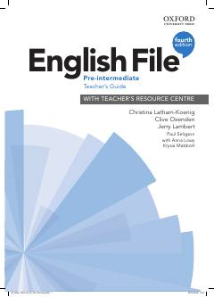

EFIngliz tili o'qituvchilari uchun dars rejalari va metodik qo'llanma.
Ushbu qo'llanma o'qituvchilar uchun mo'ljallangan bo'lib, darslarni samarali tashkil etish bo'yicha batafsil ko'rsatmalar, dars rejalari va qo'shimcha fotokopi qilinadigan materiallarni o'z ichiga oladi. U ingliz tilini o'rta bosqichdan boshlang'ichga o'tayotgan talabalarga o'qitishda muhim metodik yordamchi hisoblanadi.